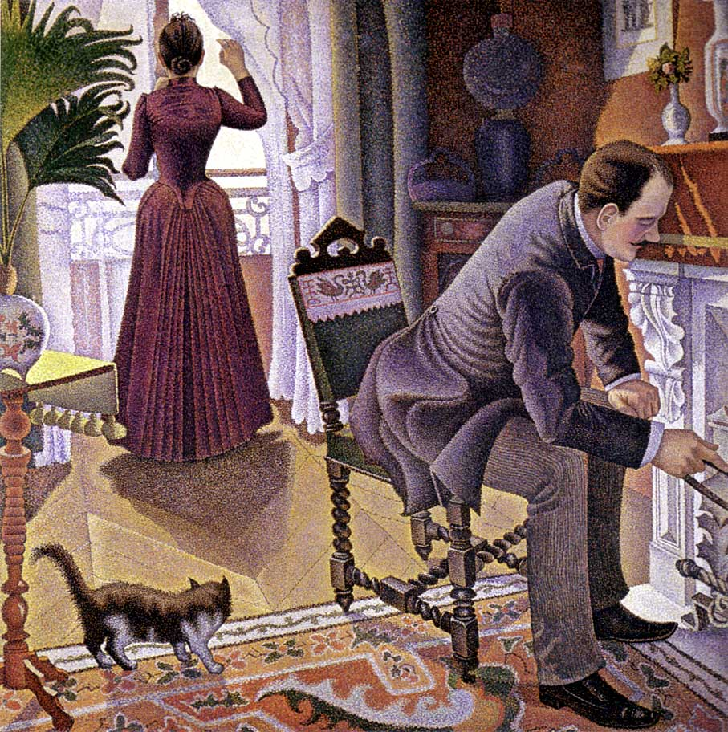
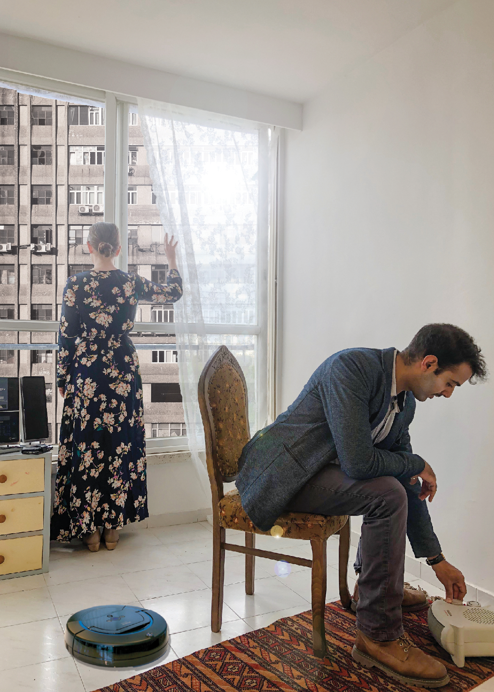

תקשורת חזותית
במסגרת הקורס, "תקשורת חזותית" "גרפיקה ממוחשבת", ניתנה לנו משימה: לקחת תמונה או יצירה של אומן מוכר וליצור לה גרסה נוספת באמצעות פרשנות אישית ומודרנית. עמוד זה מציג את היצירה שבחרתי ביחד עם השותפה לפרויקט, התהליך שעברנו והתוצר הסופי שלנו.
היצירה שבחרנו - "יום ראשון" של פול סיניאק
בשלב הראשון של הפרויקט, התבקשנו לבחור יצירה שאנו מתחברים אליה ולהציג את התיאורים השונים של היצירה:
- תיאור עובדתי אשר מפרט את מה רואים בפועל ביצירה
- תיאור פרשני אשר מפרט את פרשנות האמן במידה וקיימת
- התרשמות אישית שלנו מהיצירה
תיאור עובדתי
היצירה מציגה חדר מתוך בית ובו זוג אנשים (גבר ואישה) בסגנון לבוש מהודר , כל אחת מהדמויות מתעסקת במשהו אחר. האישה עומדת רחוקה מהצופה ומביטה אל מחוץ לחלון המואר והגבר קרוב יותר לצופה יושב על כיסא באלכסון ונוטה גם בגופו לכיוון האח מחזיק חפץ מסוים כנראה להזזת הגחלים. ישנם גם חפצים יוקרתיים שונים שנראים מסודרים בחלל כמו שטיח, וילונות, אגרטלים, תמונת קיר וצמחים. הקומפוזיציה ביצירה מחולקת בחלק העליון לשני צדדים באופן מאונך. צד שמאל של התמונה בהיר יותר ובו האישה מביטה שמאלה, ומצד ימין של התמונה הגבר מופנה לצד ימין וחלק זה כהה יותר. בחלק התחתון של הציור הקומפוזיציה אלכסונית ויוצרת עומק בעזרת הרצפה ,השטיח והצל שגם יוצרים אווירה יותר דינמית וישנה מיני דמות שלישית של חתול שמסתכל לכיוון האישה/חלון. הציור צבעוני מאוד ובצבעים חמים וכולו עשוי בטכניקה של נקודות (פוינטליזם).
תיאור פרשני
נראה שכל אחד מן הדמויות שקוע בענייניו ולא נראה שיש ביניהם קשר. שתי הדמויות מבצעות פעולה עם היד, האישה מסיטה את הווילון על מנת להסתכל החוצה על ההתרחשות בעולם שמחוץ לבית והגבר לעומתה לעשייה לבית, דואג למעשיות וליומיומיות שקשורות לאחזקת האח. נראה שמעמדם הכלכלי מצוין, אך עם זאת הם לא נראים מאושרים. נראה שזה מתרחש בשעות היום בחוץ נראה שמזג האוויר יפה, כך שלא ברור מה המהות של העיסוק עם האח אולי על מנת להפשיר את הקור בינהם או להתכונן לעתיד לבוא. החתול פונה לכיוון האישה ונראה כי פרוותו מסתמרת מסיבה כלשהי.
התרשמות אישית
בין הדמויות קיים נתק, האישה מסתכלת לחלון מואר כאילו אומרת שמחוץ לבית טוב או מעניין יותר, או מחכה למשהו שיקרה/ מישהו שיבוא האיש עוסק בעניינו מכין את האח לזמנים קשים העתידים לבוא וגם החתול מסמר את שערו ופונה לכיוון החולון. נראה שמשהו עוצמתי עומד להתרחש. אולי יש ביצירה ביקורת על מוסד הנישואין בזמנו שהוא בא לבסס מעמד חברתי חומרי ולא זוגיות אמיתית.
סרטון תהליך הפרוייקט
סרטון זה מציג את התהליך אותו עברנו: מבחירת היצירה עד התוצר הסופי
התוצר הסופי
חיפשנו מקום שיתאים לצילום, ומצאנו דירה של חברה שהסכימה שנצטלם אצלה בדירה. נעזרנו בחבר שהוא צלם מקצועי והתייעצנו איתו לגבי הצילום והזוויות על פי היצירה.